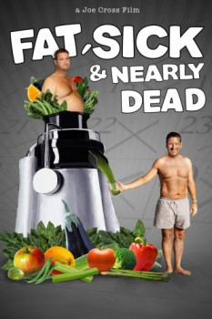

Country:Australia, 97 minutes
Spoken languages:English
Genres:Documentary
Director(s):Joe Cross, Kurt Engfehr
Writer(s):
Video Codec:Unknown
Number: 4538

Certification:NR
Storyline:
100 pounds overweight, loaded up on steroids and suffering from a debilitating autoimmune disease, Joe Cross is at the end of his rope and the end of his hope. In the mirror he saw a 310lb man whose gut was bigger than a beach ball and a path laid out before him that wouldn't end well— with one foot already in the grave, the other wasn't far behind. FAT, SICK & NEARLY DEAD is an inspiring film that chronicles Joe's personal mission to regain his health.
Cast:
Joe Cross (as Joe Cross), Phil Riverstone (as Phil Riverstone), Amy Badberg (as Amy Badberg), Merv Cross (as Merv Cross), Virginia Cross (as Virginia Cross)
Medium: Media file,
Location: D:\Personal\All Photos\desktop\Health Information\Fat, Sick and Nearly Dead.avi
Loaned: No
Aspect ratio: Unknown